Este capítulo aborda conceitos, aspectos fundamentais, estilos, fatores, atributos e níveis
de liderança, para prover conhecimentos básicos que definam a natureza das relações
desejáveis entre líderes e liderados.
1.2 - CHEFIA E LIDERANÇA
O exercício da chefia,
é entendido pelo conjunto de ações e decisões tomadas pelo mais
antigo, com autoridade para tal, na sua esfera de competência, a fim de conduzir de forma
integrada o setor que lhe é confiado
.
No desempenho de suas funções, os mais antigos, normalmente, desempenham dois papéis funcionais, a saber: o de “chefe” e o de “condutor de homens”
Caracterizados esses dois atributos do comandante, o de chefe e o de líder, pode-se
afirmar que comandar é exercer a chefia e a liderança, a fim de conduzir eficazmente a
organização no cumprimento da missão. Sendo o exercício do comando um processo
abrangente, a divisão ora apresentada será utilizada para efeito de uma melhor compreensão
do tema em lide, pois chefia e liderança não são processos alternativos e sim, simultâneos e
complementares.
A liderança deve ser entendida como um processo dinâmico e progressivo de aprendizado, o qual, desenvolvido nos cursos de carreira e no dia a dia das OM, trará não só
evidentes benefícios às organizações, como também contribuirá para o sucesso profissional
individual de cada militar.
Desta forma,
o contínuo desenvolvimento das qualidades dos
militares da MB como líderes
deverá ser objeto de atenta e permanente atenção, a ser
trabalhada, conjuntamente, pela instituição e, prioritariamente, por cada militar.
1.3 - ASPECTOS FUNDAMENTAIS DA LIDERANÇA
Neste tópico serão abordados aspectos relacionados aos estilos de liderança.
Existem diversas conceituações para liderança na literatura especializada.
A Marinha do Brasil define liderança como: “o processo que consiste em influenciar pessoas no sentido de que ajam, voluntariamente, em prol do cumprimento da missão”.
Fica evidenciado, pela definição, que a liderança inclui não só a capacidade de fazer um grupo realizar uma tarefa
específica mas, sobretudo, executá-la de forma voluntária, atendendo ao desejo do líder como
se fosse o seu próprio.
Nessa definição de liderança, estão implícitos os seus agentes, ou seja, o líder e os
liderados, as relações entre eles e a importância dos princípios filosóficos, psicológicos e sociológicos que regem o comportamento humano.
1.3.1 - Aspectos Filosóficos
A FILOSOFIA tem como característica desenvolver o SENSO CRÍTICO, que fornece ao indivíduo bases metodológicas para efetuar, permanentemente, o exame corrente da situação, favorecendo o processo de tomada de decisões.
Tal prática é fundamental ao exercício da liderança, podendo-se verificar que o requisito pensamento crítico está direta ou indiretamente associado a diversos atributos de liderança prescritos nesta Doutrina.
A prática dos fundamentos filosóficos da educação,
Seja ela formal ou informal, desenvolvida por grupos sociais, independente de suas crenças e culturas, constitui-se no elemento catalisador dos valores universais.
O ser humano precisa receber uma educação adequada para ser capaz de valorizar um objeto (a vida humana, a Pátria, a família). Sem essa educação, perde-se a capacidade de perceber esses valores, especialmente quando se trata daqueles universais, tais como: HONRA, DIGNIDADE e HONESTIDADE.
A característica fundamental da AXIOLOGIA
Consiste na hierarquização desses valores, que são transmitidos pela educação familiar, pela sociedade e pelo grupo. Essa hierarquização de valores varia de um país para o outro, de uma sociedade organizada para outra, de um grupo social para outro. Por exemplo, os fundamentalistas islâmicos, que se sacrificam em atentados, contrariando o instinto de preservação, valor primordial do ser humano.
Valores como a HONRA, a DIGNIDADE, a HONESTIDADE, a LEALDADE e o AMOR À PÁTRIA, assim como todos os outros considerados vitais pela Marinha, devem ser praticados e transmitidos, permanentemente, pelo líder seus liderados.
A TAREFA DE DOUTRINAMENTO
Visa a transmitir a sua correta hierarquização, priorizando-os em relação aos valores materiais, como o dinheiro, o poder e a satisfação pessoal. Este é o maior desafio a ser enfrentado por aquele que pretende exercer a liderança de um grupo.
1.3.2 - Aspectos Psicológicos
“Em essência, a liderança envolve a realização de objetivos com e através de pessoas. Consequentemente, um líder precisa preocupar-se com tarefas e relações humanas.” (HERSEY; BLANCHARD, 1982, p. 105).
O líder influencia outros indivíduos, provocando, basicamente, MUDANÇAS PSICOLÓGICAS e “[...] num nível de generalidade que inclui mudanças em comportamentos, opiniões, atitudes, objetivos, necessidades, valores e todos os outros aspectos do CAMPO PSICOLÓGICO do indivíduo.” (FRENCH; RAVEN, 1969, apud NOBRE, 1998, p. 43)
Os processos grupais e a liderança
São os principais objetos de estudo da Psicologia Social e a subjetividade humana, a personalidade e as mudanças psicológicas oriundas de processos de influenciação e de aprendizagem são focos de estudo e de análise da Psicologia.
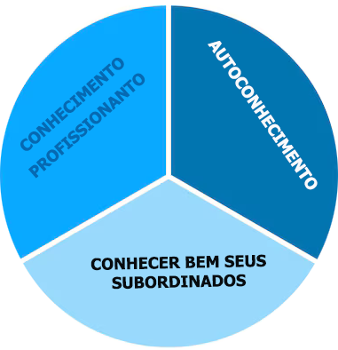
O caminho para a liderança passa pelo CONHECIMENTO PROFISSIONAL , mas também pelo AUTOCONHECIMENTO e por CONHECER BEM SEUS SUBORDINADOS . Para os dois últimos requisitos, a Psicologia pode oferecer ferramentas úteis para o líder.
Pesquisas mostram que o quociente emocional (QE) ou inteligência emocional
Está, cada vez mais, destacando-se como o principal diferencial de competência no trabalho, por se tratar da capacidade de autoconsciência, controle de impulsos, persistência, empatia e habilidade. Esta conclusão é especialmente pertinente, em se tratando do desempenho em funções de liderança.
A PSICOLOGIA é, portanto, uma ciência que fornece firme embasamento teórico e prático para que o líder possa influenciar pessoas.
1.3.3 - Aspectos Sociológicos
Os textos deste subitem foram retirados, com adaptações, do Manual de Liderança, editado em 1996 (130- Bases Sociológicas). Sociólogos concordam que a perspectiva sociológica envolve um processo que vai permitir examinar as coletividades além das fachadas das estruturas sociais, com o propósito de refletir, com profundidade, sobre a dinâmica de forças atuantes em dada coletividade.
A liderança envolve LÍDER, LIDERADOS, e CONTEXTO (ou SITUAÇÃO), constituindo, fundamentalmente, uma RELAÇÃO.
Para muitos teóricos, a liderança, dadas as características singulares que envolve, constitui-se em um processo ímpar de interação social. Partindo desta visão da liderança, é evidente o quanto a Sociologia tem para contribuir em termos de embasamento teórico no estudo e na construção do processo da liderança.
Os militares, em geral,
Em função da peculiaridade de suas atividades profissionais, constituem uma subcultura dentro da sociedade brasileira. Focalizando mais de perto ainda, pode-se afirmar que a Marinha, dentro das Forças Armadas, face a suas atribuições muito próprias, constitui-se, igualmente, em uma subcultura.
A liderança, por definição,
Pressupõe a atuação do líder sobre grupos humanos; os membros destes grupos são, em geral, oriundos de diferentes subculturas. Estes indivíduos, ao ingressarem na Marinha, passarão a integrar-se a esta nova subcultura, após um período de adaptação.
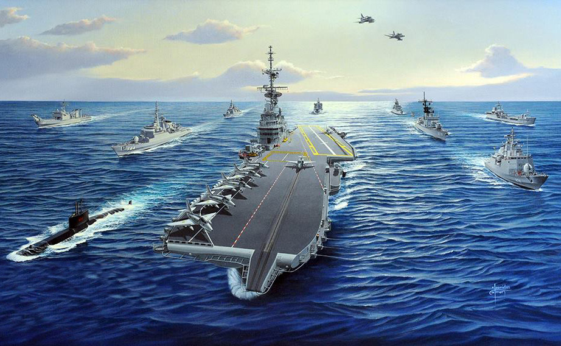
No âmbito da Marinha, pode-se distinguir subculturas correspondentes aos diferentes Corpos e Quadros, em função da missão atribuída a cada um deles. Cultura e subcultura são, portanto, temas de estudo da Sociologia de interesse para a liderança.
Outro tópico de Sociologia avaliado como relevante é o dos processos sociais, estes definidos como a interação repetitiva de padrões de comportamento comumente encontrados na vida social.
Os processos sociais de maior incidência nas sociedades e grupos humanos são: cooperação, competição e conflito.
O líder, cuja matéria-prima é o grupo liderado, necessita identificar a existência de tais processos, estimulando-os ou não, em função das especificidades da situação corrente e da natureza da missão a ser levada a termo.
Cooperação
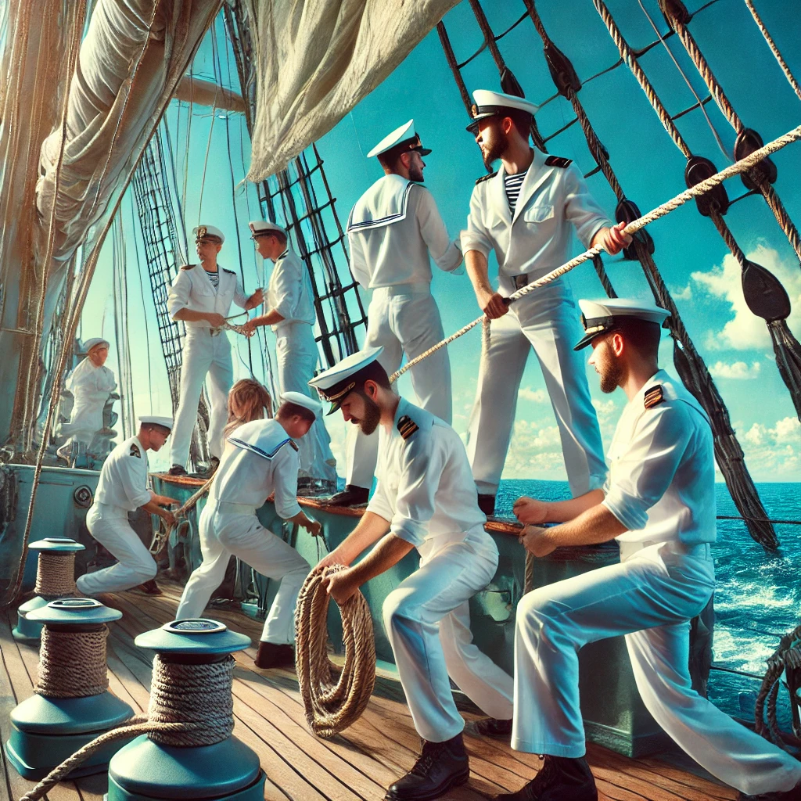
Cooperação, etimologicamente, significa trabalhar em conjunto.
Implica uma opção pelo coletivo em detrimento do individual, mas nada impede o desenvolvimento e o estímulo das habilidades de cada membro, em prol de um objetivo comum.
Sob muitos aspectos, e de um ponto de vista humanista, é a forma ideal de atuação de grupos.
Ocorre que nem sempre é possível, dentro de um grupo, manter, exclusivamente, o processo cooperativo.
Em função do contexto, das circunstâncias da própria tarefa a realizar, da natureza do grupo, ou das características do líder, outros processos se desenvolvem.
Competição
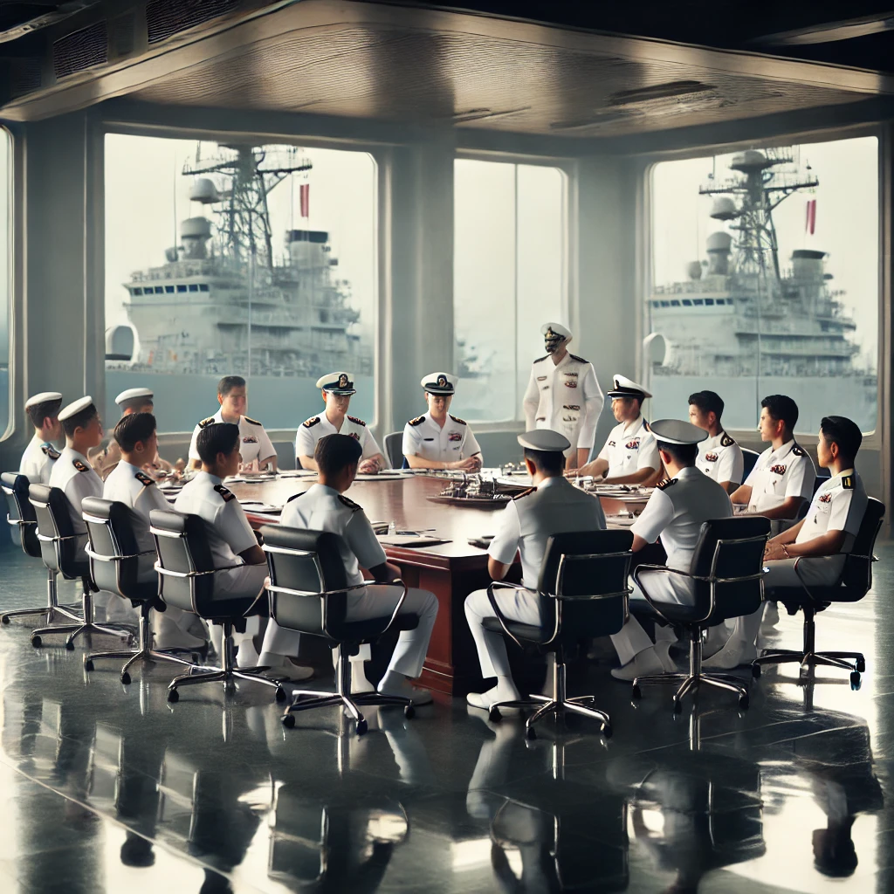
Competição é definida como a luta pela posse de recompensas cuja oferta é limitada. Tais recompensas incluem dinheiro, poder, status, amor e muitos outros. Outra forma de descrever o processo competitivo o mostra como a tentativa de obter uma recompensa superando todos os rivais.
A competição pode ser pessoal – entre um número limitado de concorrentes que se conhecem entre si – ou impessoal – quando o número de rivais é tal, que se torna impossível o conhecimento entre eles, como ocorre, por exemplo, nos exames vestibulares ou em concursos públicos.
Atualmente,
Os especialistas concordam que ambos os processos – cooperação e
competição – coexistem e, até mesmo, sobrepõem-se na maioria das sociedades. O que varia, em função de diferenças culturais, é a intensidade com que cada um é experimentado.
Sob o ponto de vista psicológico, é relevante considerar que, se a competição tem o mérito inicial de estimular a atividade dos indivíduos e dos grupos, aumentando-lhes a produtividade, tem o grave inconveniente de desencorajar os esforços daqueles que se habituaram a fracassar.
Vencedor há um só; todos os demais são perdedores.
Outro inconveniente sério, decorrente do estímulo à competição, consiste na forte possibilidade de desenvolvimento de hostilidades e desavenças no interior do grupo, contribuindo para sua desagregação.
A instabilidade inerente ao processo competitivo faz com que este, com bastante frequência, se transforme em conflito.
Na liderança, a competição tem sempre que ser saudável e estimulante.
Conflito
Conflito é a exacerbação da competição.
Uma definição mais específica afirma que tal processo consiste
Em obter recompensas pela eliminação ou enfraquecimento dos competidores. Ou seja, o conflito é uma forma de competição que pode caminhar para a instalação de violência e, que se vai intensificando, à medida que aumenta a duração do processo, já que este tem caráter cumulativo – a cada ato hostil surge uma represália cada vez mais agressiva.
O processo social de conflito inclui aspectos positivos e negativos.
Por um lado, o
conflito tende a destruir a unidade social e, da mesma forma, desagregar grupos menores, pelo
aumento de ressentimento, pelo desvio dos objetivos mais elevados do grupo, pela destruição
dos canais normais de cooperação, pela intensificação de tensões internas, podendo chegar à
violência.
Por outro lado, doses regulares de conflito de posições, podem ter efeito integrador
dentro do grupo, na medida em que obrigam os grupos a se autocriticarem, a reverem
posições, a forçarem a formulação de novas políticas e práticas, e, em consequência, a uma
revitalização dos valores autênticos próprios daquele grupo.
Uma vez instalado e manifesto o conflito no seio de um grupo, seu respectivo líder terá de buscar soluções e alternativas para manter o controle da situação.
Não é fácil ou agradável para os líderes atuar em situações de conflito, o que não justifica sua pura e simples negação.
É indispensável que o líder seja capaz de diagnosticar as situações de conflito, mesmo quando ainda latentes, de modo a buscar estratégias adequadas para gerenciá-las construtivamente.
1.4 - ESTILOS DE LIDERANÇA
Nos primórdios do século XX, prevaleceram as pesquisas sobre liderança, entendida
como qualidade inerente a certas pessoas ou traço pessoal inato. A partir dos anos 30, evoluiuse
para uma concepção de liderança como conjunto de comportamentos e de habilidades que
podem ser ensinadas às pessoas que, desta forma, teriam a possibilidade de se tornarem
líderes eficazes.
Progressivamente, os pesquisadores abandonaram a busca de uma essência da liderança,
percebendo toda a complexidade envolvida e evoluindo para análises bem mais sofisticadas,
que incluíam diversas variáveis situacionais. Nesse contexto, observa-se a proliferação de
publicações sobre liderança, incluindo trabalhos científicos e literatura sensacionalista e de
autoajuda. Diferentes autores propõem uma infinidade de estilos de liderança que se
sobrepõem. Alguns fundamentam-se em estudos e pesquisas e outros são meramente
empíricos e intuitivos. Há também muitos modismos, alguns consistindo, apenas, em
atribuição de novos nomes e roupagens a antigos conceitos, sendo reapresentados como se
fossem avanços na área de liderança.
Para simplificar a apresentação e o emprego de uma gama de estilos de liderança
consagrados e relevantes para o contexto militar-naval, foram considerados alguns estilos
selecionados em três grandes eixos:
Grau de centralização de poder;
Tipo de incentivo; e
Foco do líder.
Pode-se afirmar, genericamente, que os diferentes estilos de liderança, propostos à
luz das diversas teorias, se enquadram em três principais critérios de classificação,
apresentados como eixos lógicos em que se agrupam apenas sete estilos principais:
a) quanto ao grau de centralização de poder
Liderança Centralizadora, Liderança Participativa e Liderança Delegativa.
b) quanto ao tipo de incentivo
Liderança Transformacional e Liderança Transacional.
c) quanto ao foco do líder
Liderança Orientada para Tarefa e Liderança Orientada para Relacionamento.
Os subitens a seguir descrevem os sete principais estilos de liderança propostos pelas
diversas teorias.
Quanto ao grau de centralização de poder
A liderança centralizadora é baseada na autoridade formal, aceita como correta e
legítima pela estrutura do grupo.
O líder centralizador baseia a sua atuação numa disciplina rígida, impondo obediência
e mantendo-se afastado de relacionamentos menos formais com os seus subordinados,
controla o grupo por meio de inspeções de verificação do cumprimento de normas e padrões
de eficiência, exercendo pressão contínua.
Esse tipo de liderança pode ser útil e, até mesmo, recomendável,
Em situações especiais como em combate, quando o líder tem que tomar decisões rápidas e não é possível ouvir seus liderados, sendo a forma de liderança mais conhecida e de mais fácil adoção.
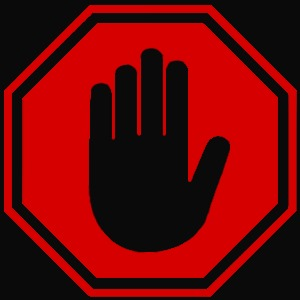
A principal restrição a esse tipo de liderança é o desinteresse pelos problemas e ideias,
tolhendo a iniciativa e, por conseguinte, a participação e a criatividade dos subordinados.
O uso desse estilo de liderança
Pode gerar resistência passiva dentro da equipe e inibir a
iniciativa do subordinado, além de não considerar os aspectos humanos, dentre eles, o
relacionamento líder-liderados.
1.4.2 - Liderança Participativa ou Democrática
Nesse estilo de liderança, abre-se mão de parte da autoridade formal em prol de uma
esperada participação dos subordinados e aproveitamento de suas ideias.
Os componentes do
grupo são incentivados a opinarem sobre as formas como uma tarefa poderá ser realizada,
cabendo a decisão final ao líder (exemplo típico é o Estado-Maior).
O êxito desse estilo
É condicionado pelas características pessoais,
pelo conhecimento técnico-profissional e pelo
engajamentoe motivação dos componentes do
grupo como um todo.
Em se obtendo sucesso, a satisfação pessoal e o sentimento de contribuição por parte dos subordinados
São fatores que permitem uma realimentação positiva do processo.
Na ausência do líder,
Uma boa equipe terá condições de continuar agindo de acordo com o planejamento previamente estabelecido para
cumprir a missão.
O líder deve estabelecer um ambiente de RESPEIRO, CONFIANÇA e ENTENDIMENTO RECÍPROCOS, devendo possuir, para tanto, ASCENDÊNCIA TÉCNICO-PROFISSIONAL sobre seus
subordinados e conduta ÉTICA e MORAL compatíveis com o cargo que exerce.
Um líder que
adota o estilo democrático encoraja a participação, mas nunca perde de vista sua autoridade e
responsabilidade.
Um chefe inseguro dificilmente conseguirá exercer uma liderança democrática, mas
tenderá a submeter ao grupo todas as decisões. Isso poderá fazer com que o chefe acabe sendo
conduzido pelo próprio grupo.
1.4.3 - Liderança Delegativa
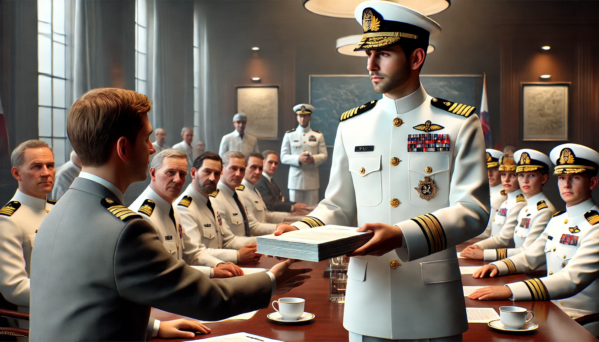
Esse estilo é indicado para assuntos de natureza técnica, onde o líder atribui a
assessores a tomada de decisões especializadas, deixando-os agir por si só.
Desse modo, ele
tem mais tempo para dar atenção a todos os problemas sem se deter especificamente a uma
determinada área.
É eficaz
Quando exercido sobre pessoas altamente qualificadas e motivadas.
O ponto crucial do sucesso deste tipo de liderança
é saber delegar atribuições sem perder o
controle da situação e, por essa razão, o líder, também, deverá ser altamente qualificado e
motivado.
O controle das atividades dos elementos subordinados
É pequeno, competindo ao
chefe as tarefas de orientar e motivar o grupo para atingir as metas estabelecidas.
Quanto ao tipo de incentivo
1.4.4 - Liderança Transformacional
Esse estilo de liderança é especialmente indicado para situações de pressão, crise e
mudança, que requerem elevados níveis de envolvimento e comprometimento dos
subordinados, sendo que
“uma ou mais pessoas engajam-se com outras de tal forma que líderes e seguidores
elevam um ao outro a níveis mais altos de motivação e moral” (BURNS, 1978,
apud SMITH; PETERSON, 1994, p. 129).
Quatro aspectos caracterizam a liderança transformacional:
1º Carisma
“[...] carisma (influência idealizada) associado com um grau elevado de poder de referência por parte do líder [...]” (NOBRE, 1998, p. 54), que é capaz de despertar respeito, confiança e admiração.
2º Inspiração Motivadora
Inspiração motivadora, que consiste na capacidade de apresentar uma visão, dando sentido à missão a ser realizada, de instilar orgulho. Inclui também a capacidade de simplificar o entendimento sobre a importância dos objetivos a serem atingidos e, a “[...] possibilidade de criar símbolos, “slogans” ou imagens que sintetizam e comunicam metas e ideais, concentrando assim os esforços [...]” (NOBRE, 1998, p. 54).
3º Estimulação Intelectual
Estimulação intelectual, consiste “[...] em encorajar os subordinados a questionarem sua forma usual de fazer as coisas, [...] além de incentivar a criatividade, o auto-desenvolvimento e a autonomia de pensamento” (NOBRE, 1998, p. 54-55), propiciando a formulação de críticas construtivas, em busca da melhoria contínua.
4º Consideração Individualizada
“Consideração individualizada, implica em considerar as necessidades diferenciadas dos subordinados, dedicando atenção pessoal, orientando tecnicamente e aconselhando individualmente” (CAVALCANTI et al., 2005) e “[...] oferecendo também meios efetivos de desenvolvimento e auto-superação.” (NOBRE, 1998, p. 55). Segundo o enfoque da liderança transformacional, ao encontrarem significado e perspectivas de realização pessoal no trabalho, os subordinados alcançam os mais elevados níveis de produtividade e criatividade, fazendo desaparecer a dicotomia trabalho e prazer. (BARRETT, 2000, apud CAVALCANTI et al., 2005).
1.4.5 - Liderança Transacional
Nesse estilo de liderança, o líder trabalha com interesses e necessidades primárias dos
seguidores, oferecendo recompensas de natureza econômica ou psicológica, em troca de
esforço para alcançar os resultados organizacionais desejados (CAVALCANTI et al., 2005).
A liderança transacional envolve os seguintes fatores:
“A recompensa é contingente, buscando-se uma sintonia entre o atendimento das
necessidades dos subordinados e o alcance dos objetivos organizacionais;
Esse
estilo de liderança caracteriza-se também pela administração por exceção, que
implica num gerenciamento atuante somente no sentido de corrigir erros [...].
”
(NOBRE, 1998, p. 55)
Neste estilo de liderança, o líder “[...] observa e procura desvios das regras e padrões,
toma medidas corretivas.” (CAVALCANTI et al., 2005, p. 120).
Quanto ao foco do líder
A especialização em tarefas é uma das principais responsabilidades do líder, na medida
em que possui a necessária qualificação profissional para o exercício da função. Nesse estilo
de liderança, então, o líder focaliza o desempenho de tarefas e a realização de objetivos,
transmitindo orientações específicas, definindo maneiras de realizar o trabalho, o que espera
de cada um e quais são os padrões organizacionais.
Nesse estilo de liderança, o foco do líder é a manutenção e fortalecimento das relações pessoais e do próprio grupo.
O líder demonstra sensibilidade às necessidades pessoais dos
liderados,
Concentra-se nas relações interpessoais, no clima e no moral do grupo. Esse estilo de liderança, que está significativamente associado às medidas de satisfação dos liderados em relação ao trabalho e ao chefe, pode ser útil em situações de tensão, frustração, insatisfação e
desmotivação do grupo. ”
(NOBRE, 1998, p. 55)
1.5 - SELEÇÃO DE ESTILOS DE LIDERANÇA
Ao proporem diferentes estilos de liderança, os autores condicionam a eficácia do seu
emprego a algumas variáveis, tais como:
Relevância da qualidade da tarefa ou decisão;
Importância da aceitação da decisão pelos subordinados para obtenção de seu envolvimento
na implantação de determinada linha de ação; tempo disponível para realização da missão;
Riscos envolvidos;
Níveis de prioridade no que diz respeito à produtividade ou à satisfação do grupo; e
Nível de maturidade psicológica e profissional dos subordinados.
Destacando-se apenas esta última variável como exemplo, pode-se afirmar, genericamente, que a
identificação de um baixo nível de maturidade (profissional e/ou emocional) no grupo de
subordinados induz à aplicação de estilos com maior centralização de poder, mais foco na
tarefa e que incentivos no nível transacional (licença, rancho, conforto etc) tendem a ter mais
valência para o grupo. Por outro lado, grupos mais maduros, em geral, respondem melhor a
estilos menos centralizadores de poder e a incentivos no nível da autorrealização, como ocorre
no estilo transformacional.
Naturalmente, não apenas uma, mas todas as variáveis relevantes
de cada situação devem ser consideradas pelo líder.
Portanto, diferentes estilos de liderança podem ser adotados, de acordo com as
circunstâncias. Pode-se considerar que:
“[...] quando se abandona a ideia de que deve existir uma melhor forma de liderar,
todas as teorias subsequentes de liderança devem ser contingenciais ou
situacionais, isto é, devem definir as circunstâncias que afetam o comportamento e
a eficácia dos líderes.” (SMITH; PETERSON, 1994, p. 173)
À luz da abordagem situacional, que prevalece na atualidade, na qual a liderança pode
assumir diversos estilos, os principais requisitos de liderança passam a ser a capacidade de
diagnosticar as variáveis situacionais, a flexibilidade e a adaptabilidade às mudanças.
Os melhores líderes utilizam estilos diferentes, em distintas situações.
Assim, é necessário um esforço pessoal do líder no sentido de se adaptar, continuamente, às mudanças de estilo
adequadas a cada contexto.
1.6 - FATORES DA LIDERANÇA
Os fatores da liderança, mencionados neste item, baseiam-se na publicação Liderança
Militar, Instruções Provisórias IP 20-10, de 1991, do Estado-Maior do Exército.
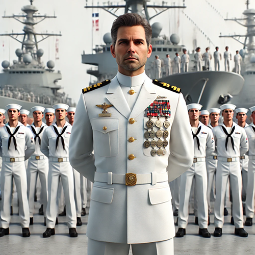
O líder deve conhecer a si mesmo, para saber de suas capacidades, características e
limitações, evitando atribuir aos seus liderados falhas ou restrições.
“Os bons líderes eficientes são também bons seguidores [...]” (BRASIL, 1991, p. 3-3)
e cumpridores das orientações de seus superiores, passando esse exemplo a seus
subordinados.
“O líder, independentemente de sua vontade, atua como elemento modificador do
comportamento de seus liderados subordinados. [...] A função militar está
relacionada com a segurança e a responsabilidade pela vida de seres humanos.”
(BRASIL, 1991, p. 3-3, 3-4)
Provavelmente, poucos profissionais são forçados a assumir tarefa tão grave ao liderar
subordinados. (BRASIL, 1991).
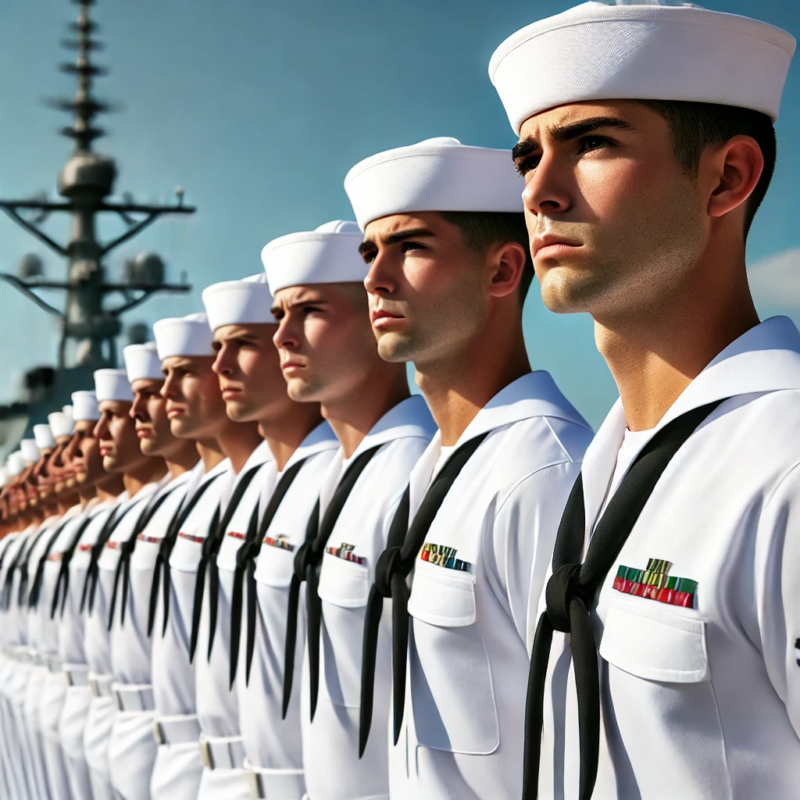
“O conhecimento dos liderados é fator essencial para o exercício da liderança e
depende do entendimento claro da natureza humana, das suas necessidades,
emoções e motivações.” (BRASIL, 1991, p. 3-4)
Isto é, ainda, crucial para o salutar exercício de Delegação de Autoridade.
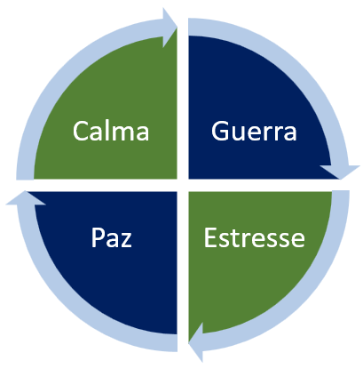
“O conhecimento dos liderados é fator essencial para o exercício da liderança e
depende do entendimento claro da natureza humana, das suas necessidades,
emoções e motivações.” (BRASIL, 1991, p. 3-4)
Isto é, ainda, crucial para o salutar exercício de Delegação de Autoridade.
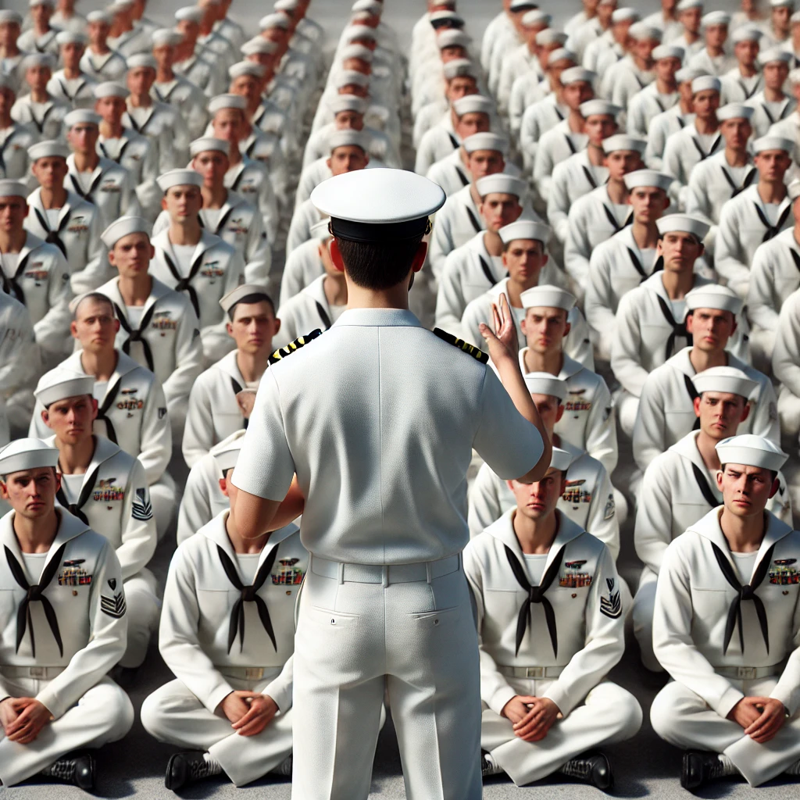
“A comunicação é um processo essencial à liderança, que consiste na troca de
ordens, informações e ideias, só ocorrendo quando a mensagem é recebida e
compreendida. [...] É através desse processo que o líder coordena, supervisiona,
avalia, ensina, treina e aconselha seus subordinados.[...] O que é comunicado e a
forma como isto é feito aumentam ou diminuem o vínculo das relações pessoais,
criam o respeito, a confiança mútua e a compreensão. Os laços que se formam,
com o passar do tempo, entre o líder e seus liderados, são a base da disciplina e da
coesão em uma organização. O líder deve ser claro e “escolher” cuidadosamente as
palavras, de tal forma que signifiquem a mesma coisa para ele e para seus
subordinados.” (BRASIL, 1991, p. 3-4).
1.7 - ATRIBUTOS DE UM LÍDER
A natureza e as especificidades da profissão militar, a destinação constitucional das
Forças Armadas e a cultura organizacional da Forças Armadas como um todo e, da Marinha,
mais especificamente, fazem com que certos traços de personalidade tornem-se desejáveis e
tendam a encontrar-se especialmente acentuados nos líderes militares. Embora não existam
fórmulas de liderança, a História, a experiência e também a pesquisa psicossocial têm
demonstrado que é importante que os chefes procurem desenvolver esses traços em si e nos
seus subordinados, porque em momentos críticos ou nas situações difíceis eles podem
contribuir para um exercício mais eficaz da liderança no contexto militar.
Os atributos de um líder têm como componente comum a capacidade de influenciar.
Um bom líder deve perseguir, manter, desenvolver e cultivar essa capacidade e,
sobretudo, transmiti-la aos seus subordinados, formando assim, novos líderes que, por sua
vez, devem agir da mesma forma, na tentativa de alcançar um círculo virtuoso.
O Anexo A define os principais atributos de um líder, que devem estar em consonância
com os preceitos da Ética Militar, segundo os fundamentos estabelecidos no Estatuto dos
Militares. Nunca é demais ressaltar que a Ética é parâmetro fundamental para o exercício da
liderança, notadamente no âmbito militar.
1.8 - NÍVEIS DE LIDERANÇA
Com a evolução das técnicas de gestão empresarial, o foco do estudo sobre o
comportamento dos dirigentes passou a ser voltado para as diferenças entre o líder de base e o
de cúpula. Foi então idealizado um padrão de organização baseado em três níveis funcionais:
operacional, tático e estratégico, discriminando as características desejáveis para um líder nos
três níveis, de acordo com suas habilidades.
Em consonância com esses novos conceitos, foram estabelecidos três níveis de
liderança:
direta;
organizacional; e
estratégica.
Estes três níveis definem com precisão toda a
abrangência da liderança e será adotado ao longo desta Doutrina.
A liderança direta é obtida por meio do relacionamento face a face entre o líder e seus
liderados e é mais presente nos escalões inferiores, quando o contato pessoal é constante. A
liderança direta, conquanto seja mais intensa no comando de pequenas frações ou unidades,
tendo em vista que a estrutura organizacional da Força exige o trato com assessores e
subordinados diretos.
A liderança organizacional desenvolve-se em organizações de maior envergadura,
normalmente estruturadas como Estado-Maior, sendo composta por liderança direta,
conduzida em menor escala e voltada para os subordinados imediatos, e por delegação de
tarefas.
A liderança estratégica militar é aquela exercida nos níveis que definem a política e a
estratégia da Força. É um processo empregado para conduzir a realização de uma visão de
futuro desejável e bem delineada.
1.8.1 - Liderança Direta
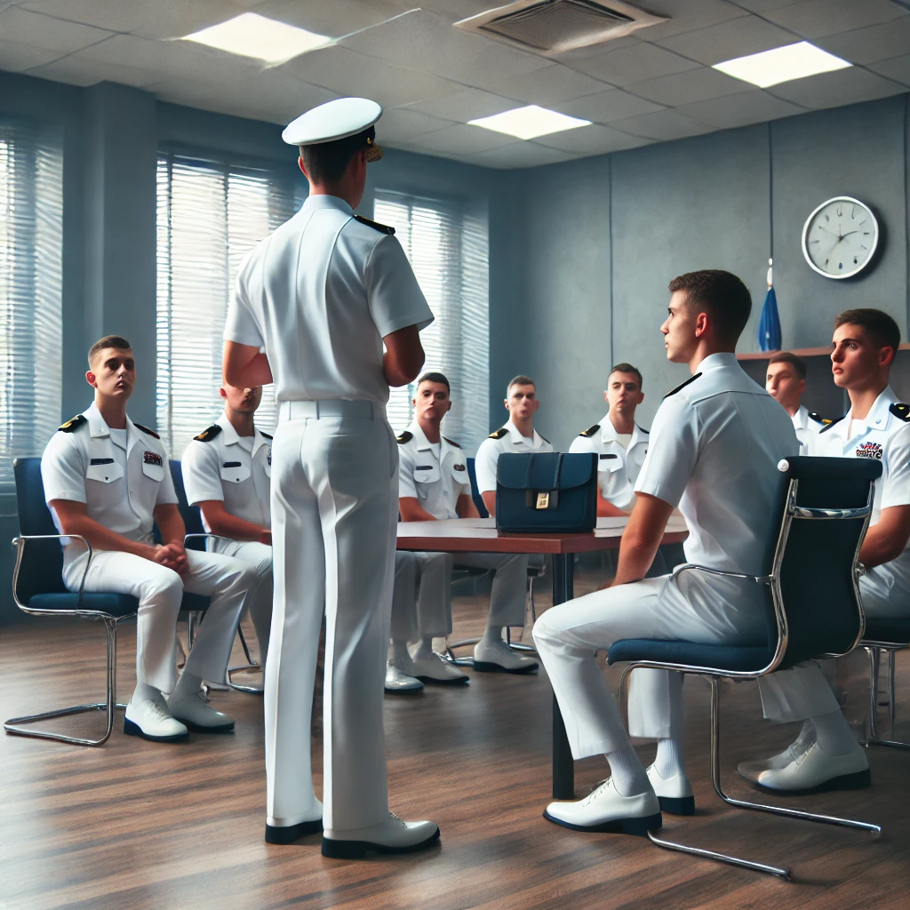
Essa é a primeira linha de liderança e ocorre em organizações onde os subordinados
estão acostumados a ver seus chefes frequentemente: seções, divisões, departamentos, navios,
batalhões, companhias, pelotões e esquadras de tiro.
Para serem eficazes, os líderes diretos
devem possuir muitas habilidades interpessoais, conceituais, técnicas e táticas.
Os líderes diretos aplicam os atributos conceituais de pensamento crítico-lógico e pensamento criativo para determinar a melhor maneira de cumprir a missão.
Como todo líder, usam a Ética para pautar suas condutas e adquirir certeza de que suas escolhas são as melhores e contribuem para o aperfeiçoamento da performance do grupo, dos subordinados e deles próprios.
Eles empregam os atributos interpessoais de comunicação e supervisão para realizar o seu trabalho.
Desenvolvem seus liderados por instruções e aconselhamento, moldando-os em equipes coesas e treinando-os até a obtenção de um padrão.
São especialistas técnicos e os melhores mentores. Tanto seus chefes quanto seus
subordinados esperam que eles conheçam bem sua equipe, os equipamentos e que sejam
“expert” na área em que atuam.
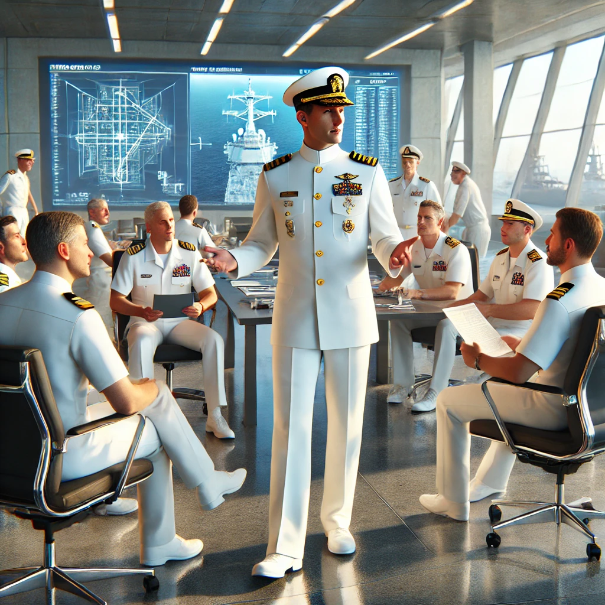
Usam a competência para incrementar a disciplina entre os seus comandados.
Usam o
conhecimento dos equipamentos e da doutrina para treinar homens e levá-los a alcançar
padrões elevados, bem como criam e sustentam equipes com habilidade, certeza e confiança
no sucesso na paz e na guerra.
Exercem influência continuamente,
Buscando cumprir a missão, tendo por base os
propósitos e orientações emanadas das decisões e do conceito da operação do chefe,
adquirindo e aferindo resultados e motivando seus subordinados, principalmente pelo
exemplo pessoal.
Devido a sua liderança ser face a face, veem os resultados de suas ações
quase imediatamente.
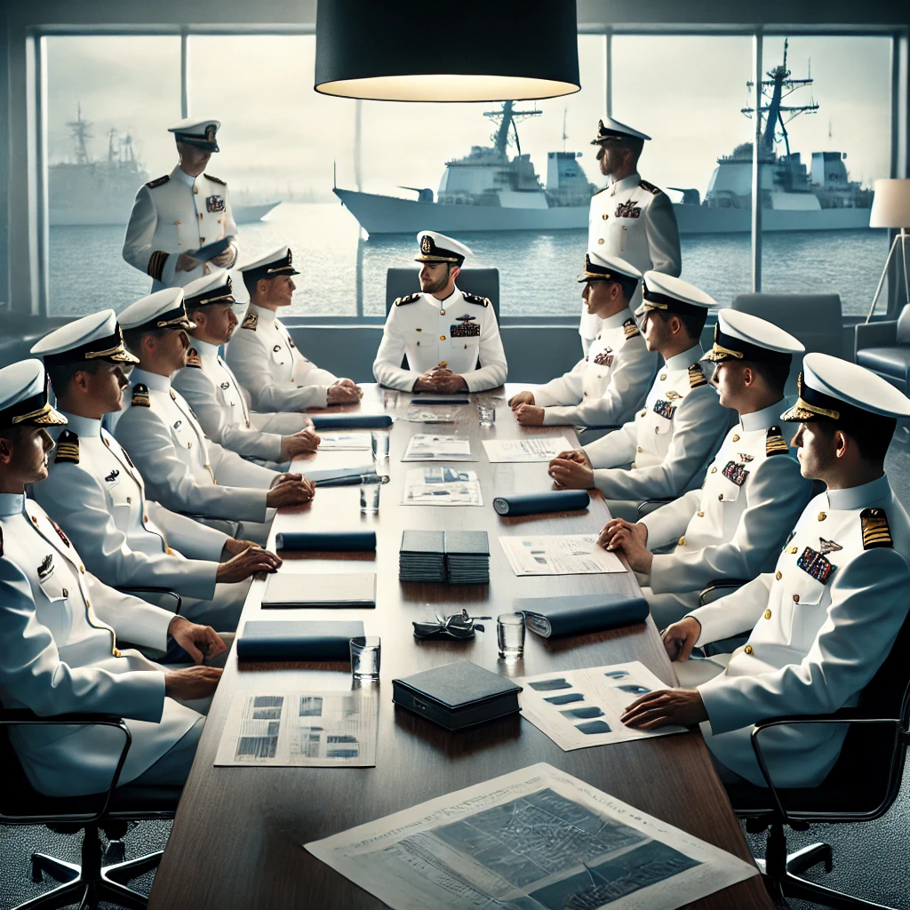
Trabalham focando as atividades de seus subordinados em direção aos objetivos da
organização, bem como planejam, preparam, executam e controlam os resultados.
Se aperfeiçoam ao assumirem os valores da instituição e ao estabelecerem um modelo
de conduta para seus subordinados, colocando os interesses da instituição e do Grupo que
lideram acima dos próprios. Com isto, eles desenvolvem equipes fortes e coesas em um
ambiente de aprendizagem saudável e efetiva.
Os líderes diretos devem,
ainda, estimular ao máximo o desenvolvimento de líderes
subordinados, de forma a potencializar a sua influência até os níveis organizacionais mais
baixos e obter melhores resultados.
Ao contrário do que acontece no nível de liderança direta, onde os líderes planejam,
preparam, executam e controlam diretamente os resultados dos seus trabalhos,
a influência dos líderes organizacionais
é basicamente INDIRETA: eles expedem suas políticas e diretivas e incentivam seus liderados por meio de seu STAFF e COMANDANATES SUBORDINADOS.
Devido ao fato de não haver proximidade, os resultados de suas ações são frequentemente menos visíveis e mais demorados. No entanto, a presença desses líderes em MOMENTOS e LUGARES CRÍTICOS aumenta a CONFIANÇA e a PERFORMANCE dos seus liderados.
Independente do tipo de organização
que eles chefiem,
Líderes organizacionais conduzem operações pela força do exemplo, estimulando os subordinados e supervisionando-os apropriadamente. Sempre que possível, o líder organizacional deve mostrar sua presença física junto aos escalões subordinados, seja por intermédio de visitas e mostras, seja por meio de reuniões funcionais com os comandantes subordinados.
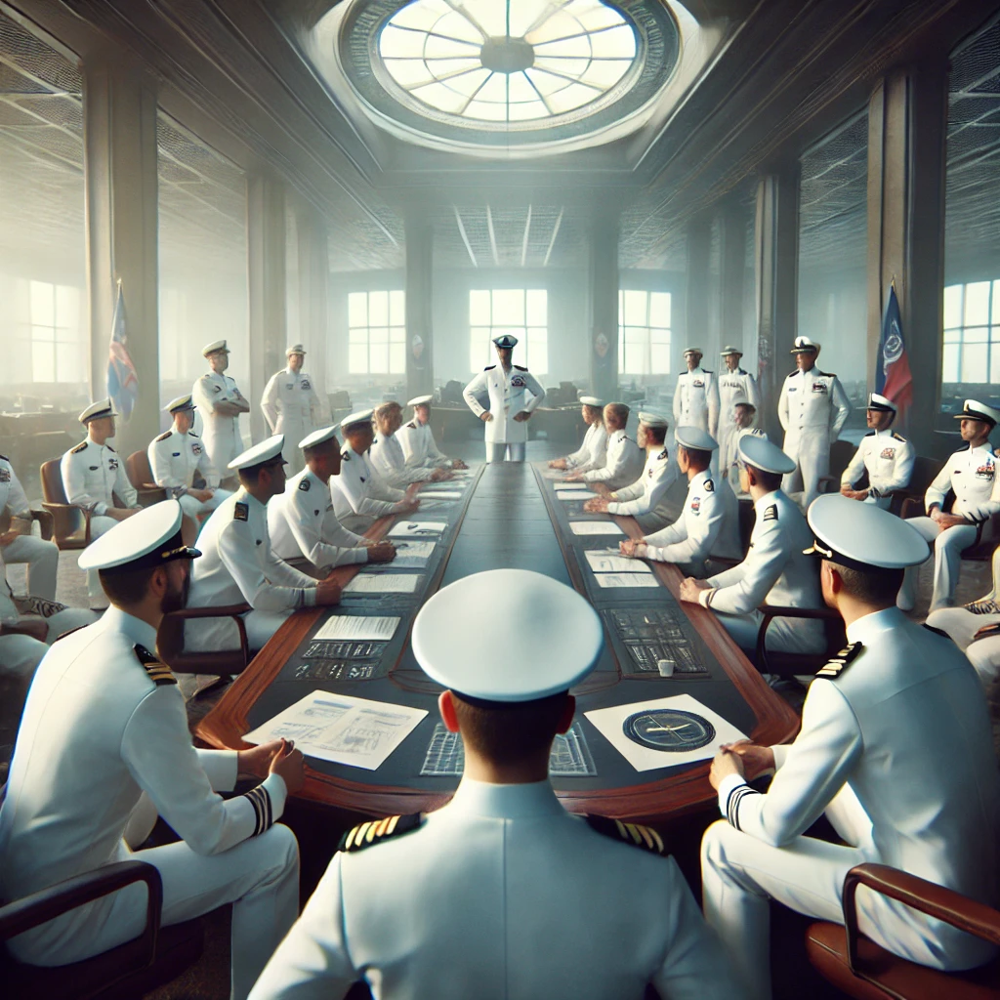
Líderes estratégicos exercem sua liderança no âmbito dos níveis mais elevados da
instituição. Sua influência é ainda mais indireta e distante do que a dos líderes
organizacionais. Desse modo, eles devem desenvolver atributos adicionais de forma a
eliminar ou reduzir esses inconvenientes.
Os líderes estratégicos trabalham para deixar, hoje, a instituição pronta para o amanhã,
ou seja, para enfrentar os desafios do futuro, oscilando entre a consciência das necessidades
nacionais correntes e na missão e objetivos de longo prazo.
Desde que a incerteza quanto às possíveis ameaças não permita uma visualização clara
do futuro, a visão dos líderes estratégicos é especialmente crucial na identificação do que é
importante com relação ao pessoal, material, logística e tecnologia, a fim de subsidiar
decisões críticas que irão determinar a estrutura e a capacidade futura da organização.
Dentro da instituição, os líderes estratégicos constroem o suporte para facilitar a busca dos objetivos finais de sua visão. Isto significa montar um staff que possa assessorá-los convenientemente a conduzir seus subordinados de maneira segura e flexível.
Para obter o suporte necessário, os líderes estratégicos procuram obter o consenso não só no âmbito interno da organização, como também trabalhando junto a outros órgãos e instituições a que tenham acesso, em questões como orçamento, estrutura da Força e outras de interesse, bem como estabelecendo contatos com representações de outros países e Forças em assuntos de interesse mútuo.
A maneira como eles comunicam as suas políticas e diretivas aos militares e civis
subordinados e apresentam aquelas de interesse aos demais cidadãos vai determinar o nível de compreensão alcançado e o possível apoio para as novas ideias. Para se fazer entender por essas diversas audiências, os líderes estratégicos empregam múltiplas mídias, ajustando a mensagem ao público-alvo, sempre reforçando os temas de real interesse da instituição.
Os líderes estratégicos estão decidindo hoje como transformar a Força para o futuro.
Eles devem trabalhar para criar e desenvolver a próxima geração de líderes estratégicos,montar a estrutura para o futuro e pesquisar os novos sistemas que contribuirão na obtenção do sucesso.
Para capitanear as mudanças pessoalmente e levar a instituição em direção à realização do seu projeto de futuro, esses líderes transformam programas conceituais e políticos em iniciativas práticas e concretas. Este processo envolve uma progressiva alavancagem tecnológica e uma modelagem cultural.
Conhecendo a si mesmos e aos demais “atores” estratégicos, tendo um nítido domínio dos requisitos operacionais, da situação geopolítica e da sociedade, os líderes estratégicos conduzem adequadamente a Força e contribuem para o desenvolvimento e a segurança da Nação.
Tendo em vista que os conflitos nos dias de hoje podem ser desencadeados muito rapidamente, não permitindo um longo período de mobilização para a guerra – como se fazia no passado –, o sucesso de um líder estratégico significa deixar a Força pronta para vencer uma variedade de conflitos no presente e
permanecer pronta para enfrentar as incertezas do futuro.
Em resumo, esses líderes preparam a instituição para o futuro por meio de sua
liderança.
Isto significa influenciar pessoas – integrantes da própria organização, membros de
outros setores do governo, elites políticas – por meio de propósitos significativos, direções
claras e motivação consistente. Significa, também, acompanhar o desenrolar das missões
atuais, sejam quais forem, e buscar aperfeiçoar a instituição – tendo a certeza que o pessoal
está adestrado e de que seus equipamentos e estrutura estão prontos para os futuros desafios.
CAPÍTULO 2
O EXERCÍCIO DA LIDERANÇA PELO PESSOAL DA MB
1.1 - PROPÓSITO
Este capítulo tem por propósito descrever as especificidades da liderança praticada na
MB e exaltar o exercício da liderança como instrumento valioso para a condução da disciplina
e o cumprimento da missão. Nele, são mencionados a ética militar naval e o exercício da
liderança pelos Oficiais e Praças.
2.2 - CONSIDERAÇÕES GERAIS
A MB caracteriza-se por ser uma Instituição em que há predominância de ações
envolvendo o relacionamento humano, visando ao cumprimento das mais diferentes missões.
Portanto, a importância do exercício da liderança é fundamental para que se possa alcançar
altos índices de operacionalidade, coesão e lealdade entre os seus integrantes.
Conhecer a profissão, demonstrar retidão de caráter, dedicação, determinação e outros
atributos podem bastar para aqueles que exercem ações de maneira isolada, mas, para o Líder,
que comanda e influencia outros homens, não é tudo. Na arte da liderança é necessário saber
diagnosticar o ambiente, conhecer seus homens, suas reações e anseios, bem como identificar
claramente a missão a ser cumprida e o objetivo a ser atingido, que será sempre o "farol" para
todas as atividades desenvolvidas.
Historicamente, na Marinha, a condução do pessoal – Liderança Naval – é um processo
de influenciação utilizado por todos os escalões, no trato com os subordinados, em busca da
harmonia entre os objetivos da Instituição e os interesses pessoais, fundamentada em leis e
tradições navais.
Ressalte-se que a Liderança Naval é exercida somente no âmbito interno, condicionada
às normas estatutárias da hierarquia e da disciplina. No âmbito externo, nem sempre é
buscada propriamente uma liderança, mas sim um relacionamento tal que facilite a necessária
persuasão quando houver necessidade de apoio à consecução dos interesses da Administração
Naval. Entretanto, nas relações extra-MB com os militares das demais Forças, militares
estrangeiros ou pessoal de organizações civis, os conceitos de liderança também podem ser
ferramentas úteis.
2.3 - A ÉTICA MILITAR NAVAL
O conjunto dos princípios, valores, costumes, tradições, normas estatutárias e
regulamentos que regem o juízo de conduta do militar da Marinha é entendido como Ética
Militar Naval. Ela é um atributo que induz ao atendimento das regras de conduta compatíveis com o comportamento militar naval desejado e dela fazem parte, dentre outros, o valor e a
ética militar (Estatuto dos Militares, Art. 27 e 28), o código de honra expresso na “Rosa das
Virtudes” e os dizeres do juramento à Bandeira (Anexo B).
Os preceitos da Ética Militar Naval constituem a base para o exercício da liderança
naval e devem ser cultivados e exaltados.
A vigilância e a observância constante dos princípios da Ética, por todos os integrantes
da MB, irão inibir atitudes altamente desmotivadoras e desagregadoras como, por exemplo, o
carreirismo, que se entende por colocar, egoisticamente, os próprios interesses acima dos do
grupo e da instituição.
2.4 - EXERCÍCIO DA LIDERANÇA PELOS MILITARES DA MB
A liderança comporta uma variada gama de fatores que compõem o perfil do Líder. O
domínio de alguns deles não assegura êxito, assim como a inexistência de outros não indica
falta de condições para ser Líder. O exercício de liderança pode significar a diferença entre a
vitória e a derrota, mesmo em um cenário onde as operações militares se valerão de complexa
e avançada tecnologia bélica.
Nesse contexto, os militares necessitam estar aptos a acompanhar a evolução da MB,
dentro da moderna concepção de racionalização da estrutura organizacional e dos processos
administrativos, exigindo maior qualificação do homem por meio de desempenho de novas
atribuições e responsabilidades.
O exercício da liderança na MB está centrado, basicamente, na capacidade profissional
de seus militares, conciliados com os atributos, tendo como parâmetro o desenvolvimento, o
ajustamento e a orientação dos subordinados. O Líder deve trabalhar para desenvolver outros
Líderes subordinados, assim como elevar o potencial, a responsabilidade e a cooperação dos
subordinados, em geral.
O militar, com reconhecida capacidade profissional em seu ambiente de trabalho, tornase
referência para seus superiores, pares ou subalternos e desponta como Líder. Nessa
situação, normalmente, passa a ser consultado sobre as mais diversas questões, tanto no
campo profissional quanto no particular, tornando-se, assim, solucionador de problemas, ao
invés de mero espectador.
A autoconfiança destaca-se como atributo a ser prioritariamente aprimorada para a
assunção de cargos na MB. Ela resulta, primeiro, do perfeito preparo profissional; segundo, da
habilidade em transmitir esse conhecimento; e terceiro, do sentimento de satisfação que daí
decorre.
Em resumo, pode-se dizer que, para se aperfeiçoar como Líder, todos devem buscar se tornar
ponto de referência, adotando os seguintes procedimentos:
a) ser sempre sincero com seus superiores, pares e subordinados;
b) obedecer e assegurar-se que as normas disciplinares são obedecidas;
c) estimular em seus subordinados o sentimento de sempre dizer a verdade;
d) ser justo e criterioso na aplicação de recompensas, elogios e punições;
e) desenvolver o gosto por atividades esportivas e intelectuais;
f) respeitar a dignidade humana dos seus subordinados, evitando o uso de expressões
depreciativas, preconceituosas ou grosseiras;
g) desenvolver a coesão e a disciplina; e
h) ser criativo.
Os militares da MB não devem se restringir tão somente ao conhecimento sobre os deveres
específicos de sua incumbência, mas também sobre aqueles de postos/graduações acima. Há nisso
um duplo benefício, pois, além de se preparar para assumir responsabilidades que poderão vir a cair
sobre seus ombros, alargará sua visão, colocando-se em condições de compreender melhor as
ordens de seus superiores e de cumpri-las de forma mais abrangente.
Assim, devem, continuamente, buscar a sua evolução e a de seus companheiros e
subordinados, o dia a dia da vida dos militares deve ser um constante exercício da liderança. Os
militares que forem capazes de enfeixar consigo os maiores conhecimentos sobre o assunto e,
efetivamente, utilizarem esses conhecimentos no exercício de suas funções, estarão aptos a alcançar
as mais destacadas posições na carreira. Por isso, eles não devem se limitar ao conhecimento
necessário para o desempenho de suas tarefas atuais, pelo contrário, é dever de cada um buscar o
seu constante aprimoramento, não permitindo que o aprendizado e o exercício da liderança fiquem
restritos aos cursos de formação. Destaca-se, portanto, a necessidade de orientar os militares, por
ocasião das avaliações, quanto aos aspectos comportamentais positivos e aprimorar os relacionados
ao exercício da liderança, visando o constante aperfeiçoamento do desempenho individual e
coletivo. É na paz que se constrói a liderança para a guerra.
Todos os militares devem ser incentivados a aprimorar sua capacidade de liderança, buscando:
a constante atualização técnico-profissional; a capacidade de perceber a situação e mudar
adequadamente o estilo de liderança a ser exercido; aprimorar o relacionamento com outras
Instituições, nacionais e estrangeiras; o conhecimento da conjuntura econômica e social; e a
sensibilidade no trato com os subordinados. Esses militares devem ser capazes de compreender e
usar todos os recursos que lhes permitam identificar e resolver problemas, formular hipóteses e
avaliar a situação em prazos cada vez mais exíguos.
Merece destaque o papel dos oficiais em cargo de chefia, comando ou direção. A eles são
confiadas as mais elevadas e complexas responsabilidades, que repercutem no destino da
Instituição. Portanto, eles não devem se limitar ao incentivo da prática da liderança em suas OM,
mas devem exaltar e ser exemplo, dos conceitos, princípios e valores da liderança naval.
2.5 - EXPEDIÇÃO DE ORDENS E DELEGAÇÃO DE AUTORIDADE
O Anexo C contém orientações referentes à expedição de ordens e o Anexo D contém
orientações sobre delegação de autoridade, em razão da importância desses fatores para o exercício
da liderança.
2.6 - APLICAÇÃO DA LIDERANÇA NAS RELACÕES EXTRA-MB
As demais Forças Armadas brasileiras também seguem, como parâmetro legal, o Estatuto
dos Militares e Leis Complementares, onde são definidos dois elos fundamentais entre chefes e
subordinados: a hierarquia e a disciplina, bem como a relação dos Comandos para a execução das
tarefas conjuntas. Essa abordagem é fundamental para esses diferentes grupos humanos de interesse
que, eventualmente, atuam de forma conjunta. Nessas situações, destacam-se certas nuanças,
decorrentes das especificidades de cada força, sobre as quais o Líder deve ter atenção, quais sejam:
a) a terminologia diferenciada;
b) os regulamentos, costumes e tradições;
c) o relacionamento entre os diferentes níveis hierárquicos; e
d) as diferentes atividades do “marinheiro”, do “soldado” e do “aviador”.
Os Líderes navais, em situações de atuação conjunta, devem considerar esses aspectos para
exercer sua influência em seus liderados.
O ponto de partida para a aglutinação de grupos com militares das demais Forças Armadas é
enfatizar o dever militar - valor e ética - preconizados no Estatuto dos Militares.
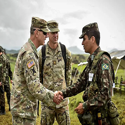
O exercício da liderança em operações combinadas com Forças Armadas de outros
países é dos mais complexos. Essa dificuldade se deve, principalmente, às diferenças
culturais, sociais e religiosas, tais como as relativas ao entendimento das formas de
cumprimentar, demonstrar satisfação ou insatisfação, se alimentar e realizar rituais religiosos,
devendo ser, impreterivelmente, consideradas pelo Líder. O perfeito entendimento de todos
esses aspectos do grupo a ser liderado constitui-se fator essencial para a efetiva liderança.
Da mesma forma que nas demais situações de liderança, o Líder deverá ser,
necessariamente, um Líder intramuros, reconhecido pela sua conduta moral e profissional,
percepção política, conhecimento profissional, cultura geral, habilidade de negociação, capacidade
de comunicação e iniciativa.
Nessas relações com militares estrangeiros, mais do que um representante da MB, o Líder
naval é um representante da Nação e, portanto, deve procurar alcançar resultados positivos no
melhor interesse da MB e do País, à luz das diretivas político-estratégicas recebidas.
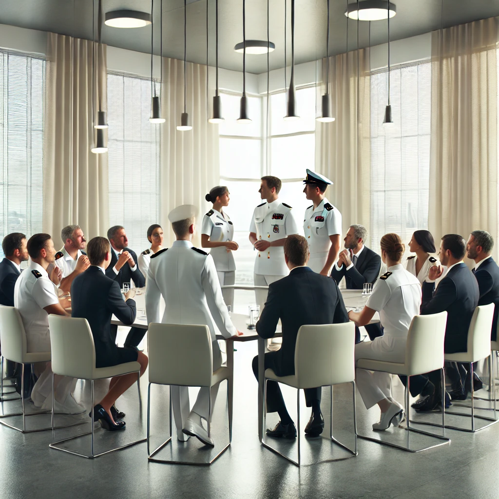
No ambiente que transcende aos grupos militares, o Líder naval não terá um grupo de
liderados sobre os quais tenha uma ascendência hierárquica militar. Esse ambiente pode ser
político/militar (nacional ou internacional), diplomático, empresarial, acadêmico ou
técnico/científico, dentre outros. Nesses ambientes, os conceitos básicos de liderança assumem um
valor maior pela necessidade da posse de uma grande capacidade de influenciação, não respaldada
na hierarquia e disciplina. Entram em cena a negociação, a capacidade de comunicação utilizando
todos os meios disponibilizados pela tecnologia atual e o conhecimento das regras básicas de
comportamento de cada ambiente específico, equilíbrio emocional, os conhecimentos técnicos
profissionais e a cultura geral.
O Líder naval, nesse ambiente, tem sua credibilidade associada à sua posição hierárquica, ao
seu papel de chefe naval, à sua percepção política, à capacidade de comunicação e iniciativa, ao
conhecimento técnico e à habilidade de negociação.
O poder do Líder, nesses grupos, advém do conhecimento ou habilidades especializadas, das
relações e ligações pessoais, e da autoridade pessoal e carisma.
O Líder naval deve definir o objetivo (com clareza de metas), criar uma estratégia de
liderança e possuir atributos que permitam comunicar-se de forma persuasiva, demonstrar
entusiasmo, ser perseverante, comportar-se de modo íntegro, ser gentil, ter senso de humor,
respeitar os demais e agir com firmeza e confiança.
2.7 - AVALIAÇÃO DO EXERCÍCIO DA LIDERANÇA
O desempenho do militar no exercício da liderança deverá ser alvo de contínua avaliação ao
longo da carreira, constituindo requisito de fundamental importância para a sua ascensão e para sua
inclusão nos processos de seleção de importantes comissões.
Grande importância deve ser dada à análise do comportamento do militar, por meio de
simulações e por meio de casos extremos comuns ao dia a dia, quando decisões difíceis precisarão
ser tomadas e, consequentemente, seus atributos como líder irão aflorar positiva ou negativamente.
A liderança deve ser considerada, como um dos principais aspectos da avaliação regular e
sistematizada, de modo a permitir a identificação e o destaque dos líderes, aos quais possam ser
atribuídas as responsabilidades pela execução de tarefas e pelo desempenho de cargos e funções que
contribuirão para a condução dos destinos da MB.
2.8 - DISPOSIÇÕES COMPLEMENTARES
Com o propósito de aprimorar continuamente o pessoal da MB no exercício da liderança é
recomendada a utilização de “Estudos de Casos” na condução dos adestramentos relativos ao
desenvolvimento do tema “Liderança”.
ANEXO A
PRINCIPAIS ATRIBUTOS DE UM LÍDER
1 - Exemplo
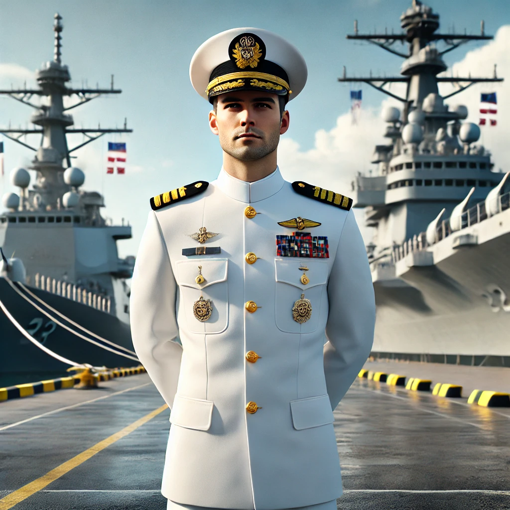
Apresentação pessoal e comportamento coerentes com valores, normas e crenças da
instituição, em todas as circunstâncias.
“Não há nada que se exija tanto de um líder quanto dar o exemplo pessoal, ou seja
o exemplo do seu comportamento, pleno de valores inerentes à ética militar, aceitos
e respeitados pelo grupo.” (BRASIL, 1996, p. 54)
“A todo momento, o líder é observado por seus subordinadas e deve buscar conquistarlhes
a confiança, o respeito e a admiração.” (BRASIL, 1996).
3 - Humildade
É ter consciência de que o líder pode não saber tudo sobre determinado assunto, que pode
estar equivocado em seu julgamento ou sua posição e que mais modernos, ou mais antigos,
com suas experiências, podem saber mais e ajudá-lo no cumprimento da missão.
2 - Integridade Ética
Apresentação pessoal e comportamento coerentes com valores, normas e crenças da
instituição, em todas as circunstâncias.
Honestidade, transparência e comprometimento inquebrantável com os valores éticos da
instituição, tais como: honra, lealdade para com seus superiores, pares e subordinados,
fidelidade e coragem, dentre outros, expressos na Rosa das Virtudes (Anexo C). Dentre os
atributos que compõem a integridade ética, pode-se destacar:
2.1 - Lealdade
“A Lealdade é o verdadeiro, espontâneo e incansável devotamento a uma causa, a
sincera obediência à autoridade dos superiores e o respeito aos sentimentos de
dignidade alheia.” (BRASIL, 2009, p. 33).
2.2 - Coragem
A coragem apresenta-se sob duas formas: coragem física – superação do medo ao
dano físico no cumprimento do dever; e coragem moral – disposição para defender suas
convicções, sobretudo em situações críticas, e para “[...] opinar e agir sempre pelo bem,
mesmo e, principalmente, quando não favorecer e ou até contrariar as conveniências
pessoais.” (BRASIL, 2009, p. 39).
Por sua importância na paz ou no combate, ressalta-se que a coragem moral é a
capacidade de assumir responsabilidade por suas decisões e erros.
4 - Competência Profissional
“Competências representam combinações sinérgicas de conhecimentos, habilidades
e atitudes, expressas pelo desempenho profissional, dentro de determinado
contexto organizacional.” (DURAND, 2000; NISEMBAUM, 2000, apud BRUNOFARIA;
BRANDÃO, 2003, p. 37)
O militar deve sempre aprimorar seus conhecimentos e habilidades e, por meio de uma
atitude positiva compatível com seu grau hierárquico, conseguir resultados eficazes para a
instituição.
5 - Determinação
Persistência para a realização de tarefas, possibilitando vencer as dificuldades encontradas
até concluí-las com eficácia, dentro dos prazos estabelecidos.
6 - Entusiasmo
É uma disposição para assumir responsabilidades e enfrentar desafios, demonstrando
vibração espontânea e contagiante pelo seu trabalho e pela Organização.
7 - Capacidade Decisória
É a habilidade para considerar diversas linhas de ação, diante de uma situação-problema,
escolhendo, em tempo hábil, aquela mais adequada para, assim, implementá-la.
Quando necessário, o líder deve ser capaz de tomar decisões difíceis ou impopulares com
firmeza e coragem.
O líder deve ter firmeza em suas decisões, não sendo, irredutível, diante das circunstâncias
que se apresentam.
8 - Autoconfiança
Capacidade de pensar e de decidir, autonomamente, e convicção de ter competência para
ser bem sucedido diante de dificuldades, expressa pela segurança, firmeza e otimismo no
modo de falar e de agir.
9 - Autocontrole
Estabilidade de humor e capacidade de atuar eficazmente, mesmo sob pressão.
10 - Flexibilidade
Maleabilidade de ideias e habilidade para integrar informações novas, mesmo que
divergentes em relação a crenças e planejamentos prévios, desde que agreguem valor.
Capacidade de adaptação a mudanças. Habilidade para atuar corretamente de modo diverso
em diferentes situações.
11 -Altruismo
Capacidade de se colocar no lugar dos liderados, compreendendo-os, demonstrando
interesse genuíno por suas necessidades, preocupando-se e provendo o desenvolvimento e
bem-estar pessoal e profissional destes.
12 - Respeito
O líder deve ter respeito pela dignidade humana, que é inerente a todo indivíduo. O líder
que respeita seu subordinado é educado ao dirigir-lhe a palavra. É imparcial em seus
julgamentos, seus elogios e suas críticas. Age com tato e demonstra consideração com cada
um de seus comandados.
13 -Capacidade de Relacionamento Interpessoal
Habilidade para lidar com pessoas, sejam superiores, pares ou subordinados, com tato,
respeito e consideração individualizada. Capacidade de exercer o papel de mentor, cultivando
habilidades alheias, fornecendo feedback construtivo e reconhecimento oportuno.
“Os líderes que trabalham bem em grupo produzem uma atmosfera de
solidariedade amistosa e constituem, eles mesmos, modelos de respeito,
prestimosidade e cooperação. Inspiram nos demais um compromisso ativo e
entusiástico com o esforço coletivo, e promovem a fidelidade e a identificação.”
(GOLEMAN; BOYATZIS; McKEE, 2002, p. 254)
15 - Iniciativa
“A Iniciativa, em um plano mais elevado, é a faculdade de deliberar acertadamente
em circunstâncias imprevistas ou na ausência dos superiores, agindo sob
responsabilidade própria, mas dentro da doutrina, a bem do serviço. Para assim
fazer, é preciso ter capacidade profissional, confiança em si e estar bem orientado.”
(BRASIL, 2009, p. 34)
Cabe aos mais antigos, criar um clima propício e estimular tal prática em seus
comandados.
14 -Comunicação
Habilidade verbal para persuadir e inspirar os liderados, fomentando um sentido de
objetivo, que vá além das tarefas cotidianas, tornando o trabalho mais estimulante, de forma a
conquistar a adesão voluntária dos subordinados. Clareza, objetividade e propriedade de
linguagem na expressão oral e escrita. Preocupação com a disseminação pronta e eficaz de
ordens e notícias, de forma a prevenir mal-entendidos, rumores e boatos nocivos ao moral do
grupo.
É de extrema importância que o líder procure desenvolver esta capacidade, tanto escrita
como oral, para se fazer entender por seus comandados, em todos os níveis. A expedição de
ordens, a orientação sobre tarefas ou missões, tudo se faz por meio dessa comunicação. Nunca
é demais lembrar que, não raras vezes, ordens são mal executadas não por deficiência de
quem as cumpriu, mas por falta de clareza de quem as deu.
É também por meio da boa comunicação que o líder pode persuadir e motivar seus
comandados.
15 - Iniciativa
“A Iniciativa, em um plano mais elevado, é a faculdade de deliberar acertadamente
em circunstâncias imprevistas ou na ausência dos superiores, agindo sob
responsabilidade própria, mas dentro da doutrina, a bem do serviço. Para assim
fazer, é preciso ter capacidade profissional, confiança em si e estar bem orientado.”
(BRASIL, 2009, p. 34)
Cabe aos mais antigos, criar um clima propício e estimular tal prática em seus
comandados.
16 -Senso de Justiça
Capacidade de julgar, imparcial e respeitosamente, com base em dados objetivos, de
acordo com o mérito e o desempenho de cada um, não se deixando influenciar por
sentimentos pessoais, estereótipos ou preconceitos.
ANEXO B
JURAMENTO À BANDEIRA E ROSA DAS VIRTUDES
“INCORPORANDO-ME À MARINHA DO BRASIL -
- PROMETO CUMPRIR RIGOROSAMENTE -
- AS ORDENS DAS AUTORIDADES A QUE ESTIVER SUBORDINADO;-
- RESPEITAR OS SUPERIORES HIERÁRQUICOS -
- TRATAR COM AFEIÇÃO OS IRMÃOS DE ARMAS -
- E COM BONDADE OS SUBORDINADOS -
- E DEDICAR-ME INTEIRAMENTE AO SERVIÇO DA PÁTRIA -
- CUJA HONRA, INTEGRIDADE E INSTITUIÇÕES -
- DEFENDEREI COM O SACRIFÍCIO DA PRÓPRIA VIDA.”
ROSA DAS VIRTUDES
VALORES DA MARINHA
ABNEGAÇÃO
A Abnegação é o esquecimento voluntário do que há de egoístico nos desejos e tendências naturais, em proveito de uma pessoa, causa ou ideia.
É a renegação de si mesmo e a disposição de se colocar a serviço dos outros com o sacrifício dos próprios interesses.
O caráter marinheiro é carregado de Abnegação: tem a consciência do “servir”; inclui a base de todas as virtudes, a humanidade; e possui a simplicidade em todas as suas ações e palavras.
A Abnegação, portanto, fortalece o desenvolvimento de todas as atividades de serviço à Marinha, criando a unidade de ação, pois ela é passar por cima de qualquer interesse individual.
COOPERAÇÃO
Cooperar é auxiliar eficiente e desinteressadamente; é esforçar-se em benefício de
uma causa comum. O militar deve sempre agir no interesse maior do conjunto dos serviços. É a
Cooperação que faz a eficiência da Marinha. Em todas as atividades, o trabalho deve obedecer a
esse espírito de comunhão de esforços, a fim de que a potencialidade do conjunto, como um todo,
seja a mais elevada possível. Assim, superiores e subordinados não devem limitar-se apenas ao
cumprimento das tarefas que lhes tiverem sido cometidas, mas, sim, procurar ajudar-se
mutuamente na execução das mesmas, buscando compreender as necessidades e prioridades da
instituição como um todo.
A Cooperação é uma exigência imperiosa para a eficiência da instituição, mas só possui esta
qualidade quem não dá guarida às influências perniciosas do egoísmo, da intriga ou da
indiferença, em prol de um sincero e profissional desprendimento.
CORAGEM
A Coragem é a disposição natural que nos permite dominar o medo e enfrentar
qualquer perigo. É a força capaz de fazer com que aquele que ama a vida, e que nela é feliz, saiba
arriscá-la e se disponha a morrer por uma causa nobre. A Coragem é o destemor em combate.
Há também a coragem moral – não menos imprescindível e valiosa, a força
psíquica que ampara os homens nas crises do pensamento e do caráter. É a sustentação das
próprias ordens, atitudes e convicções; o saber assumir a responsabilidade dos seus atos; o
afrontamento à perfídia, à inveja e à incompreensão; a manutenção intransigente do rumo moral,
custe o que custar. A coragem tem de andar de mãos dadas com a sabedoria, a prudência, o bom
senso e a calma. O militar corajoso é otimista; confia em si; é eficiente; acredita no valor de seus
companheiros. Comanda seus subordinados, certo de conquistar o êxito.
DECISÃO
Decidir é tomar resolução, é sentenciar, é orientar a ação. Não há qualidade, no
trato geral dos militares para com seus subordinados, que mais tenda a aumentar o respeito e
confiança desses subordinados, do que sua capacidade de decidir. O irresoluto, o perplexo, jamais
poderá conduzir homens ou comandar navios. Uma orientação insegura é tão nociva quanto a
ausência de orientação. Uma decisão vigorosa é a característica dos vencedores. Evidentemente,
para acertar, é necessário meditação, cálculo, considerações cuidadosas e reflexão a respeito das
circunstâncias, a fim de chegar a uma decisão conveniente. Tal “exame de situação” deve
preceder à emissão da ordem. O verdadeiro chefe medita bem antes de chegar a uma decisão. Se
sabe dizer sim ou não, com serena energia e acerto, e mantém-se firme em sua posição, ganha
confiança de seus subordinados. A menos que novas circunstâncias se apresentem, a modificação
de uma decisão tomada dá a impressão de que houve precipitação ou leviandade em formulá-la.
O hábito constante de examinar todas as possíveis situações e analisar todos os dados disponíveis
é muito recomendável. Assim procedendo, há sempre certeza de decisões oportunas e adequadas.
DISCIPLINA
A força de coesão de qualquer coletividade humana é a Disciplina. É indispensável
não só a um Organismo Militar, mas a qualquer outro que pretenda reunir indivíduos em uma
unidade sólida e eficaz. A Disciplina tem um único inimigo verdadeiro, que é o egoísmo, tão
mais obstinado quanto mais inconsciente de si mesmo. O amor próprio ilimitado separa o homem
de seus mais nobres pensamentos, tornando-o um ser isolado, que nada aceita fora do seu eu.
Despido de todo o sentimento de solidariedade, não pode conceber a Disciplina a não ser como
forma de escravidão. A Disciplina não visa a tolher a personalidade, mas sim a regular e
coordenar esforços. Ela somente torna-se fecunda quando há condições de ser alegre e ativa. Um
simples conformismo ou o receio das censuras ou sanções não trazem a Disciplina. O que a faz
presente e aceita é um forte sentimento de interesse comum e, principalmente, a correta
percepção de um dever comum. Assim entendida, não haverá o risco de ela coibir ou enfraquecer
as iniciativas, pois não será imposta, mais sim adquirida. A Disciplina Militar manifesta-se
basicamente: pela obediência pronta às ordens do superior; pela utilização total das energias em
prol do serviço; e pela correção de atitudes e cooperação espontânea em benefício da disciplina
coletiva e da eficiência da instituição. Na Marinha, a Disciplina é inseparável da hierarquia e
traduz-se no perfeito cumprimento do dever por cada um de seus componentes.
ESPÍRITO DE SACRIFÍCIO
O Espírito de Sacrifício é a disposição sincera de realmente oferecer,
espontaneamente, interesses, comodidades, vida, tudo, em prol do cumprimento do dever.
O cultivo do Espírito de Sacrifício é praticado vencendo os pequenos incômodos pessoais, os
menores percalços do dia a dia.
“Quem não é fiel no pouco, certamente não será no muito”:
somente percebendo o valor das coisas é que se desenvolve o Espírito de Sacrifício e se torna
capaz de dar um passo a mais na formação do caráter marinheiro.
ESPÍRITO MILITAR
Espírito Militar é a qualidade que impele o militar de cumprir com natural
interesse, dentro da ética, os deveres e obrigações do serviço, com disciplina e lealdade, sempre
animado pelo desejo de ver brilhar o seu navio, a sua classe e aumentar a eficiência e o prestígio
da Marinha. O militar demonstra estar possuído de Espírito Militar em suas maneiras de agir e de
se expressar; no apuro de seus uniformes; na saudação a seus superiores; na discrição com que se
manifesta; na seriedade que imprime ao seu serviço, como expressão da dignidade da sua função
e da eficiência dos seus encargos. O militar dotado de Espírito Militar cria em torno de si um
ambiente de compostura, seriedade e confiança, qualidades essenciais a quem comanda e tem sob
sua direta responsabilidade a guarda e a defesa de preciosos valores morais e materiais da Nação.
FIDELIDADE
Ser fiel é ser honesto, ter têmpera forte para opinar e agir sempre pelo bem,
mesmo, e principalmente, quando não favorecer ou até contrariar as conveniências pessoais. A
fidelidade ao serviço impede que o militar cuide de afazeres e atividades estranhos à Marinha,
enquanto estiver ao seu serviço, e negligencie as suas obrigações. Executar ordens que são
agradáveis, ou que partem de pessoas a quem se dedica estima, é um dever fácil de cumprir. Mas,
cumprir ordens difíceis, arriscando a vida, contrariando os próprios interesses e opiniões, por
fidelidade ao serviço, é muito mais digno, porquanto implica sacrifício, que caracteriza a virtude
militar.
O “Fogo Sagrado” é a paixão, a fé, o entusiasmo com que o militar se dedica à sua
carreira; é o seu intenso amor à Marinha, o seu devotamento pela grandeza da sua profissão; é a
larga medida de uma verdadeira vocação e de um sadio patriotismo; é o supremo amor pelo
serviço.
É essa crença que anima a ponto de, naturalmente, julgar que os deveres que a lei marca
são o mínimo, e que para bem servir cumpre ir além do próprio dever, fazer tudo quanto é
humanamente possível, à custa, embora, de ingente labor.
O “Fogo Sagrado” é essa força misteriosa que, dominando a alma do verdadeiro marinheiro, o
conduz sempre ao sacrifício com inexcedível vibração e estóica resignação
.
O “Fogo Sagrado” é a alma da Marinha!
A Honra é o sentimento que induz o indivíduo à prática do Bem, da Justiça e da Moral. É a força que o impele a prestigiar sua própria
personalidade, como um sentimento de seu patrimônio moral, um misto de brio e valor.
Ela exige a posse do perfeito sentimento do que é justo e respeitável, para a elevação da dignidade e da bravura desse indivíduo, e, assim, afrontar
perigos de toda a ordem, na sustentação dos ditames da Verdade e do Direito.
É a virtude por
excelência, porque em si contém todas as demais. A Honra está acima da vida e de tudo que
existe no mundo.
Os haveres e demais bens que o indivíduo possui são transitórios, enquanto que
a Honra a tudo sobrevive; transmite-se aos filhos, aos netos, ao lar, à profissão escolhida e à terra
em que se nasce.
A Honra é o patrimônio da alma.
Na profissão, ela consiste, principalmente, na
dedicação ao serviço, no cumprimento do dever, na intrepidez e na disciplina, tudo inspirado pelo
patriotismo.
Um navio nunca se entrega ao inimigo e sua bandeira jamais se arria em presença
dele.
A Honra do Marinheiro o impede!
INICIATIVA
A Iniciativa é o ânimo pronto para conceber e executar. É uma manifestação de
inteligência, imaginação, atividade, saber e dedicação ao serviço. Um militar cumpre de forma
conscienciosa as obrigações, as rotinas de seu cargo, faz o treinamento regular de seus homens,
etc. Um outro faz tudo isto e vê onde um aperfeiçoamento pode ser introduzido. Não só o
concebe, como se interessa por sua adoção. Se é coisa que só dele dependa e a sua ideia não vai
ferir a conveniência da uniformidade dos diversos serviços, nem a harmonia da cooperação, ele a
adota, estuda e a desenvolve. A Iniciativa, em um plano mais elevado, é a faculdade de deliberar
acertadamente em circunstâncias imprevistas ou na ausência dos superiores, agindo sob
responsabilidade própria, mas dentro da doutrina, a bem do serviço. Para assim fazer, é preciso
ter capacidade profissional, confiança em si e estar bem orientado.
LEALDADE
A Lealdade é o verdadeiro, espontâneo e incansável devotamento a uma causa, a
sincera obediência à autoridade dos superiores e o respeito aos sentimentos de dignidade alheia.
O subordinado leal cumpre as ordens que recebe sempre com o mesmo ardor, quer esteja perto ou
longe de quem as deu, ainda que, por vezes, intimamente não as compreenda. A Lealdade é mais
do que a Obediência, porque esta se refere à vontade expressa pelo superior e aquela, ao firme
propósito de honestamente interpretá-la e fielmente cumpri-la. É o sentimento que leva, pois, o
subordinado a fazer tudo quanto for humanamente possível para bem cumprir uma ordem ou
desempenhar uma dada missão. A Lealdade exige que se manifeste ao superior,
disciplinadamente e no interesse do serviço, toda eventual incompreensão em relação à
determinação ou orientação recebida. A franqueza respeitosa, oportuna e justa é uma autêntica
expressão de lealdade. Mantida, porém, a ordem, a mesma lealdade exige que se cumpra rigorosa
e interessadamente o que foi determinado.
ORDEM
A Ordem é diligência, porque economiza o tempo, e é previdência, porque o
conserva. Como exemplo de disciplina e método, a ordem orienta o espírito e promove
segurança, porque resguarda e alinha em lugar próprio aquilo que será utilizado no futuro. A sua
falta traz o desperdício e a perda do tempo, bem precioso, e que, uma vez perdido, não há como
reaver. A arte de organizar, pôr em ordem, é essencial em um condutor de homens. O
aprendizado da arte de organizar inicia-se individualmente na ordenação do próprio trabalho
;organizando o material, os livros, os uniformes; encontrando o tempo necessário para se ocupar
adequadamente dos estudos e das demais atividades de formação.
PATRIOTISMO
O Patriotismo é o sentimento irresistível que prende os indivíduos à terra em que
nasceram. É a trama de afetos que, através das gerações, vai sendo tecido em suas almas ao redor
do solo querido. Externamente, é a emoção que os indivíduos sentem ao ouvir os acordes do Hino
Nacional e ao ver desfraldada a Bandeira de sua Pátria. Em essência, é a crença na defesa dos
ideais de Nacionalidade. Expressão de carinho que os liga à terra que serviu de berço, o Patriotismo
é a força de coesão poderosa que os torna solidários em um interesse comum,
ensinando-os a bem querer, servir, honrar e defender a Pátria.
TENACIDADE
Aplicação é uma forma de dedicação, de amor ao serviço.
É a disposição para estudar tanto o material em si como também a maneira de
utilizá-lo
; para estar a par das rotinas, da organização interna de bordo, da ordenança, dos regulamentos e das leis; para bem conhecer tudo referente aos aspectos essenciais da profissão.
Na arte de conduzir os homens, o campo é mais profundo: faz-se necessária a tenacidade, o poder da vontade.
É o saber querer longamente, sem desfalecimento e sem trégua.
É a presença de ânimo perante qualquer obstáculo ou dificuldade,
a vontade constante de tudo superar e bem desempenhar a tarefa ou função, de
caráter operativo ou administrativo.
O espírito de tenacidade transmite-se, pois, exatamente, pela continuidade da ação.
ZELO
O Zelo é atributo que não depende, em alto grau, de preparo profissional, de
predicados especiais de inteligência e de saber.
É, por isso mesmo, virtude que deve ser comum a todos os que servem à Marinha.
Essa qualidade é consequência direta do “amor próprio”, do amor à Marinha e à Nação.
É o sentimento que leva a não poupar esforços para o bom desempenho das funções que lhes são atribuídas./p>
É o sentimento que conduz à dedicação ao serviço, como autêntica expressão do Dever.p>
No Zelo, está implícita a aceitação de que se serve à Nação e não a pessoas.
Ninguém tem o direito de deixar de zelar por suas obrigações, por motivos circunstanciais, alheios ou não à sua vontade. O Zelo está intimamente ligado à probidade, vista como a capacidade de bem administrar os bens, fundos e recursos que nos foram confiados.
Faz-se presente, assim, no exato cumprimento de orçamentos e planos financeiros e no atento cuidado com o patrimônio da Marinha.
ANEXO C
ORIENTAÇÕES SOBRE EXPEDIÇÃO DE ORDENS
A muitos parecerá que a expedição de uma ordem seja coisa tão simples que dispense
qualquer estudo a respeito; basta que o chefe se inteire do que deve ser realizado e transmita,
aos subordinados, a necessária ordem a esse respeito. Mas, como veremos a seguir, o fato não
é tão simples como parece à primeira vista, exigindo do chefe não somente o conhecimento de
determinadas “normas” como, até mesmo, a plena ciência dos motivos determinantes de uma
ordem. É necessário, portanto, antes de estabelecer “como dar ordens”, indagar “porque” são
dadas, “o que” são na realidade e “quando” são precisas.
Para que as ordens, quando necessárias, sejam corretamente dadas, deve o chefe:
Ordem
Descrição
Ser claro
Isso significa que, sendo a clareza essencial, o chefe deve escolher
cuidadosamente as palavras – escritas ou faladas e principalmente escritas – de tal forma que
signifiquem a mesma coisa para ele e os subordinados.
Usar um tom de voz adequado
As ordens devem ser dadas num tom de voz firme,
natural, vigoroso, sem denotar, porém, exasperação, fadiga ou aborrecimento.
Evitar ordens simultâneas
Não raro, encontramos chefes que, por motivo de uma
errônea concepção de “eficiência”, se dirigem ao subordinado determinando-lhe uma série de
ordens ao mesmo tempo. Isso cria confusão, demora de assimilação e desnorteamento com
relação às tarefas a serem executadas.
Dar ordens simples, na devida sequência de tempo e de tal forma que as tarefas mais
importantes sejam realizadas em primeiro lugar.
Reduzir ao mínimo as ordens negativas
Procure dar às ordens um conteúdo positivo. Há qualquer coisa na natureza humana
que se torna de pronto curiosa a respeito do que não deve ser feito. Embora haja coisas que
certamente não devem ser feitas, a atenção deve ser focalizada no que deve ser feito, pois isso,
aliado ao apoio e estímulo oferecidos neste sentido, fará com que reste pouco tempo para que
se pense nas “alternativas indesejáveis”. Também é mais fácil, num grupo bem organizado,
convencer do acerto daquilo que contribui para os propósitos do mesmo, do que demonstrar a
necessidade dos “não se deve” ou “não farás”.
Evitar ordens contraditórias
Poucas coisas impressionam tão mal o subordinado
como a circunstância do chefe expedir determinada ordem e, logo a seguir exprimi-la num
sentido oposto. O chefe parece-lhe inseguro, vacilante sobre o que conhece e diz.
Claro que pode surgir a necessidade de se modificar uma ordem, até mesmo em
sentido contrário. Em tais ocasiões, porém, o subordinado deve estar ciente de que o chefe
“sabe o que está fazendo” e tem fundadas razões para assim agir.
O propósito da expedição de ordens depois de assinalar que se devem ter em conta os
fatores relativos à recepção adequada da ordem, sua transmissão perfeita e execução correta,
focaliza os seguintes cuidados cuja observância será muito útil ao chefe:
1º Relativo à “atenção”
É importante que o subordinado focalize a sua atenção completamente nas ordens que lhe são dadas.
2.º Relativo à “memória”
O chefe deve fazer com que, na medida do possível, a ordem seja curta e clara, de maneira que possa ser facilmente retida pela memoria.
Finalmente, o chefe deve verificar se as ordens foram compreendidas.
Normas apontadas por Beckman:
a) procure estar bem informado antes de dar a ordem;
b) determine a tarefa tendo em vista o que o trabalhador pode executar;
c) dê instruções precisas, embora breves, distintamente pronunciadas;
d) não tenha a compreensão da ordem como garantida;
e) repita a ordem, se não entendida;
f) pergunte se as ordens são claras – faça com que o trabalhador as repita;
g) controle o mau gênio; evite a irreverência, o abuso e o sarcasmo;
h) faça uma demonstração da tarefa, quando necessário;
i) adote maneiras apropriadas ao indivíduo;
j) adote maneiras adequadas à situação;
k) não dê várias ordens ao mesmo tempo;
l) não determine mais trabalho do que possa ser executado;
m) escreva as ordens mais difíceis ou complexas;
n) explique a finalidade, se necessário;
o) verifique e corrija o que o trabalhador faz;
p) depois de expedir uma ordem, não importune ou permaneça junto do trabalhador;